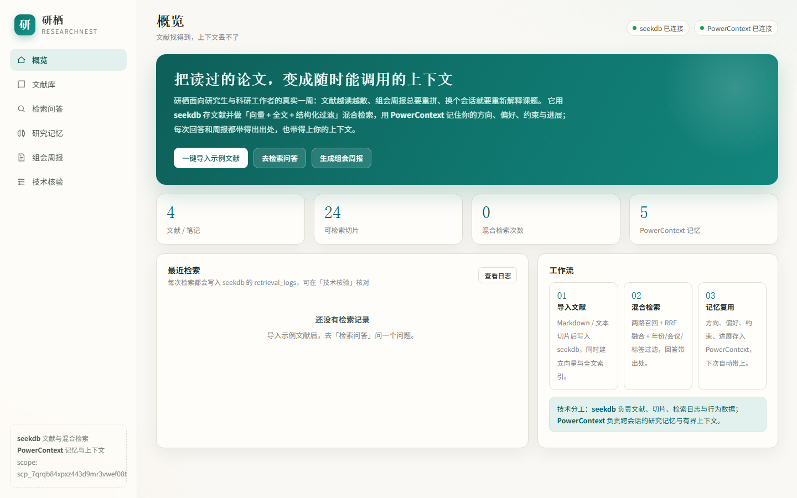
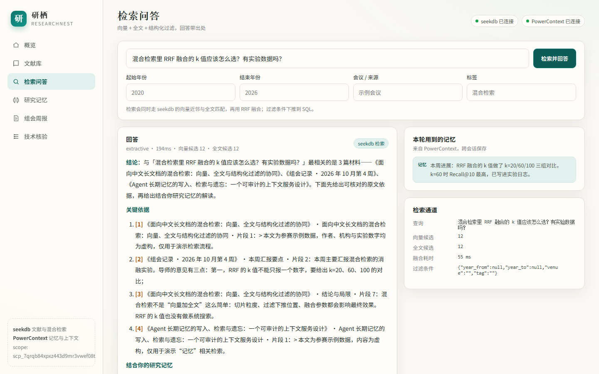
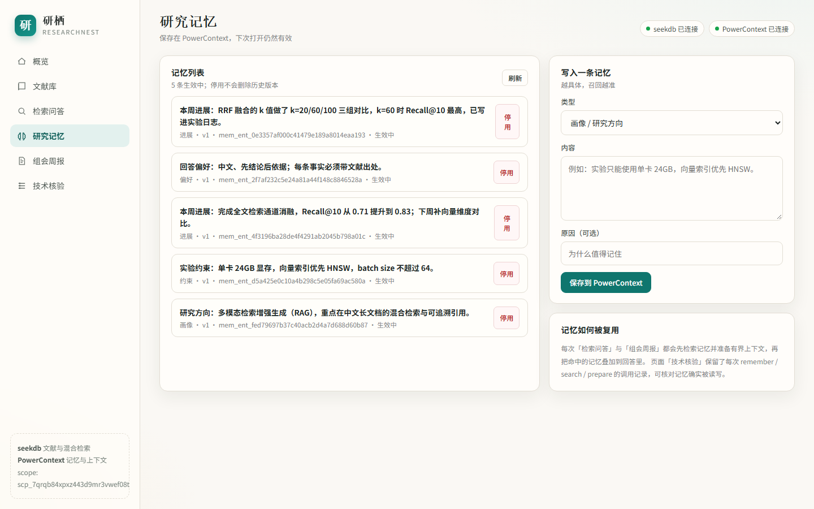
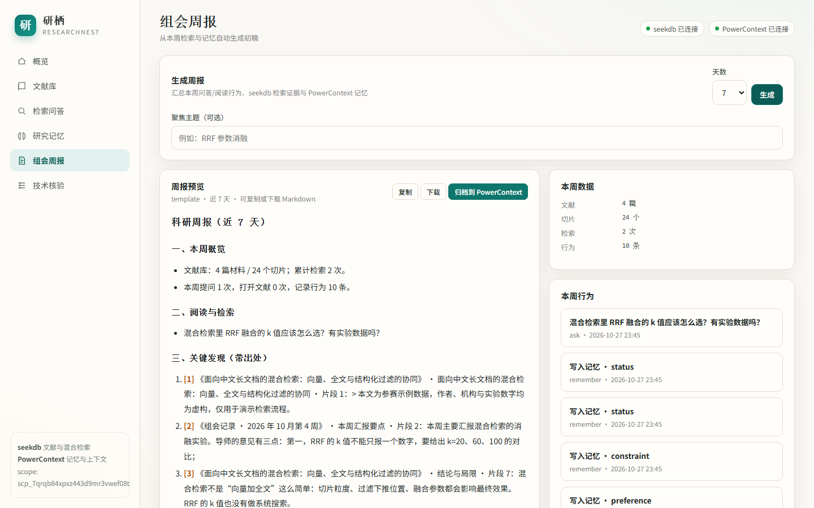
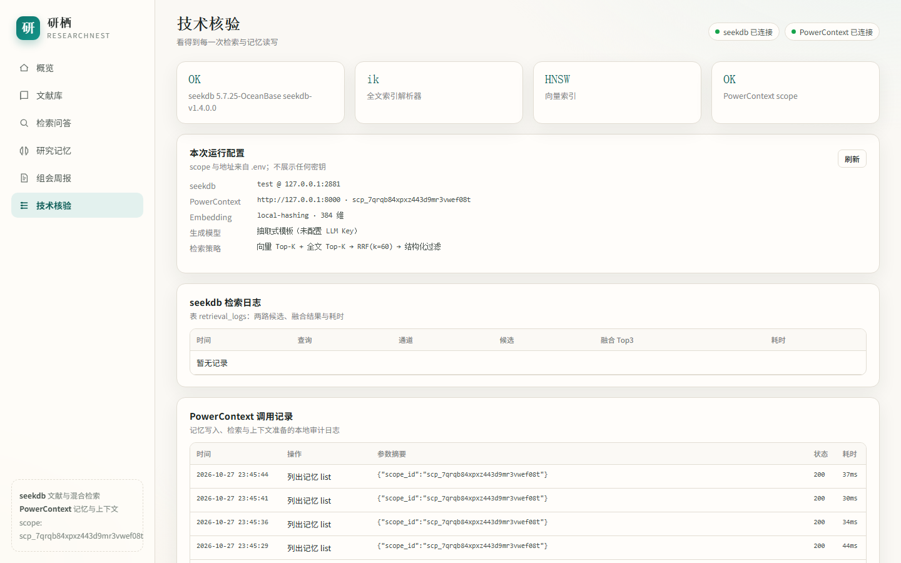

文献找得到
上下文丢不了
研栖是一个面向研究生与科研工作者的阅读工作台：论文与笔记进 seekdb 做 向量 + 全文 + 结构化过滤的混合检索，方向、偏好、约束与进展进 PowerContext。 回答和周报都带得出出处，也带得上你的上下文。

科研阅读的三个真实摩擦
不是“缺一个聊天框”，而是读过的内容留不下来、留下来的又调不出来。
关键词搜到，语义搜不到
同一篇论文换个问法就沉底；纯向量又容易把“看起来像”的段落排前面。单通道检索总有一头漏。
每个会话都从零解释
“我的方向是多模态 RAG”“实验只有单卡 24GB”——这些约束每次都要重打一遍，助手还是记不住。
组会周报靠手工回捞
这周读了什么、哪条结论来自哪篇、下周要补什么，散在笔记和聊天记录里，周五晚上重新拼一遍。
把“存、找、记、交付”放进同一条链路
每一环都能在页面上核对，而不是只在 README 里声称。
混合检索，引用可回原文
向量近邻与全文匹配各取 Top-K，RRF 融合；年份、会议、标签条件下推 SQL。回答里的 [1] [2] 对应证据原文、切片 ID 与命中通道。

研究记忆，跨会话复用
方向、偏好、约束、决策、进展写成 Memory；每轮问答先召回再生成，页面显示“本轮用到了 哪些记忆”。重启应用后依然有效。

组会周报，从证据到进展
汇总本周检索行为、命中文献与进展记忆，生成五段式 Markdown；可一键归档为 Source 并写回一条 status 记忆。

技术核验，评审可复查
页面直接展示 seekdb 的检索日志（两路候选、融合 Top3、耗时）与 PowerContext 调用 记录（remember / search / prepare）。

两种技术，各管一件事
seekdb 回答“这句话在哪”，PowerContext 回答“我是谁、做到哪了”。
| 能力 | 归属 | 落点 |
|---|---|---|
| 文献、切片、元数据 | seekdb | papers / chunks |
| 向量 + 全文两路召回 | seekdb | HNSW + MATCH ... AGAINST |
| RRF 融合与过滤下推 | seekdb | 一次检索两条 SQL |
| 检索审计 | seekdb | retrieval_logs |
| 研究记忆 | PowerContext | Memory + Scope |
| 有界上下文 | PowerContext | context/prepare |
| 周报归档 | PowerContext | Source + status Memory |
--demo）用内存数据预览界面，页面会明确标注。
可复现，而不是“看起来能跑”
把关键路径写成断言，评审执行一条命令即可得到 PASS/FAIL 与证据。
$ python -m unittest discover -s tests
Ran 54 tests in 4.987s
OK (skipped=3) # 3 个真库集成用例，设 SEEKDB_LIVE=1 才跑
$ SEEKDB_LIVE=1 python -m unittest discover -s tests
Ran 54 tests in 6.109s
OK
$ python scripts/verify_live.py
[1/6] 健康检查
PASS seekdb 已连接（5.7.25-OceanBase seekdb-v1.4.0.0）
PASS PowerContext 已连接（scope=scp_5w9nmt2p84gsnepqbr4rt5fke8）
PASS 全文索引可用（不是 LIKE 退化路径）
PASS 向量索引可用（ANN 未退化为精确扫描）
[3/6] 混合检索问答
PASS 返回 6 条带出处引用
PASS 检索通道无报错（两条 SQL 都成功执行）
PASS 每条引用都带非空的文献标题
PASS 两路召回均有候选（向量 12 / 全文 12）
PASS 命中 1 条研究记忆
首条引用：《面向中文长文档的混合检索…》· 片段 1（通道=vector+fulltext）
...
结果：PASS（18 项全部通过）- 向量 SQL 使用
l2_distance ... APPROXIMATE，全文 SQL 使用布尔模式 MATCH - 两路候选与融合结果写入
retrieval_logs，页面可查 - 记忆按 scope 持久化，重启后仍能召回
- 回答、周报、证据列表共用同一套 citation 编号
- 无全文索引时退化为 LIKE，无向量索引时退化为精确扫描，均记录 warnings
- 检索 SQL 引用的列必须存在于建表语句：
test_schema_contract.py守着这条线 - 示例数据为虚构，不含真实用户信息
三分钟跑起来
只需要 Python 3.11+ 与 Docker；应用侧只有一个第三方依赖 pymysql。
cd qoder
docker compose up -d seekdb
uv tool install --force "powercontext[cli,server]==1.2.0"
powercontext server run # 另开终端
python -m pip install -r requirements.txt
cp .env.example .env
python scripts/init_db.py
python scripts/seed.py --with-memory
python app/server.py # http://127.0.0.1:8787
只想看界面：python app/server.py --demo，使用内存数据，不连接数据库。
验证样例
打开「检索问答」，输入下面这个问题，然后去「技术核验」核对。
“混合检索里 RRF 融合的 k 值应该怎么选？有实验数据吗？”
- 回答出现
Recall@10、k=20/60/100等来自示例材料的细节 - 右侧「本轮用到的记忆」出现方向、偏好、约束、进展（问句与记忆无字面交集时按常驻主题召回，页面会标注）
- 「技术核验」新增一条
vector+fts检索日志 - 再写入一条约束记忆并提问，回答会引用它
- 生成周报，引用编号与证据清单一一对应
title 字段，问答无法返回证据”。在真实 seekdb
（oceanbase/seekdb:latest，v1.4.0.0）上复现后确认，这是
live 链路的必现故障，且不止一处：① chunks 表缺
title 列，向量与全文两条 SQL 同时 1054；② 数据库
cursor 未用 DictCursor，返回 tuple 导致按列名取值全部报错；
③ 向量索引重复创建时被误判为失败，第二次启动谎报“退化为精确扫描”。三处已修复，
并补了表结构契约测试与真库集成测试——首版 47 个单测把 SQL 执行整个 mock 掉，所以这些
问题一个都没被发现。现在 verify_live.py 18 项全过，
截图与 SQL 证据见仓库 docs/verification.md。